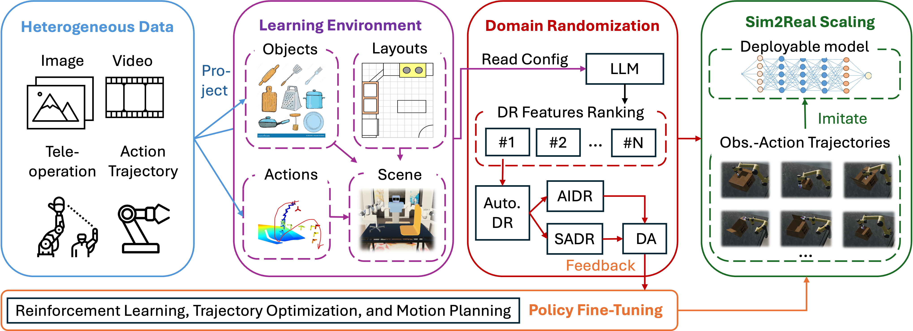
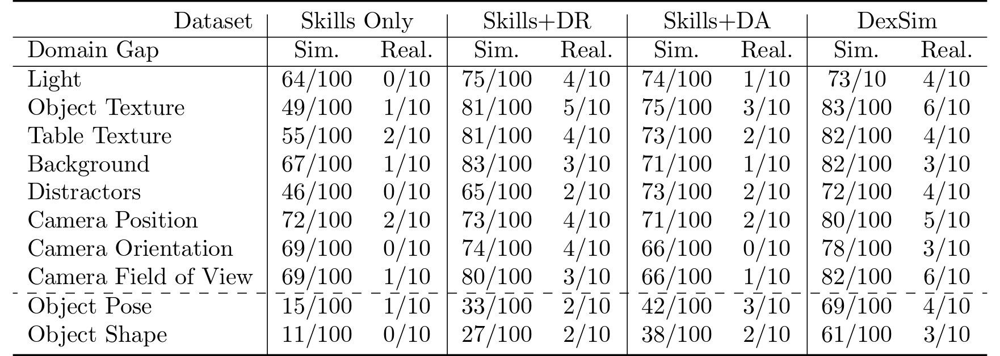
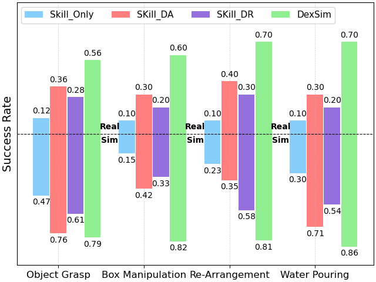

A critical prerequisite for achieving generalizable robot control is the availability of a large-scale robot training dataset. Due to the expense of collecting realistic robotic data, recent studies explored simulating and recording robot skills in virtual environments. While simulated data can be generated at higher speeds, lower costs, and larger scales, the applicability of such simulated data remains questionable due to the gap between simulated and realistic environments.
To advance the Sim2Real generalization, in this study, we present DexScale, a data engine designed to perform automatic skills simulation and scaling for learning deployable robot manipulation policies. Specifically, DexScale ensures the usability of simulated skills by integrating diverse forms of realistic data into the simulated environment, preserving semantic alignment with the target tasks.
For each simulated skill in the environment, DexScale facilitates effective Sim2Real data scaling by automating the process of domain randomization and adaptation. Tuned by the scaled dataset, the control policy achieves zero-shot Sim2Real generalization across diverse tasks, multiple robot embodiments, and widely studied policy model architectures, highlighting its importance in advancing Sim2Real embodied intelligence.

As a data engine, DexScale takes task-descriptive data as input and generates a skill dataset to support Sim2Real transfer. This enables the zero-shot deployment of robot policies in realistic environments.
Data Scaling for Object Grasping
Data Scaling for Paper Box Manipulation
Data Scaling for Dual-arm Table Rearrangement
Bottled Water Pouring
Figures and videos above illustrate examples of action trajectories for the tasks of 1) object grasping, which requires the robot to accurately detect objects and predict appropriate grasp poses; 2) paper box manipulation, involving precise control and planning to sequentially open all four flaps of a box; 3) dual-arm table rearrangement, where the robot must reorient both a fork and a spoon to face the front of the plate and place them accurately around it; and 4) bottled water pouring, which involves grasping and reorienting a water bottle to pour water precisely into a paper cup. To demonstrate the scalability of DexScale, the control policies are deployed on different robots, including two single-arm robots and a dual-arm robot equipped with wrist-mounted cameras.
1. Success rates of imitation policies trained on various datasets under different Sim2Real domain gaps.

2. Control performance in realistic (top) and simulated (bottom) environments using various models.

3. Real-world deployments of policies trained with DexScale-generated datasets.
Object Grasping
Paper Box Manipulation
Dual-arm Table Rearrangement
Bottled Water Pouring
If you find this work useful, please cite:
@inproceedings{
liu2025dexscale,
title={DexScale: Automating Data Scaling for Sim2Real Generalizable Robot Control},
author={Guiliang Liu and Yueci Deng and Runyi Zhao and Huayi Zhou and Jian Chen and
Jietao Chen and Ruiyan Xu and Yunxin Tai and Kui Jia},
booktitle={International Conference on Machine Learning, ICML},
year={2025},
}